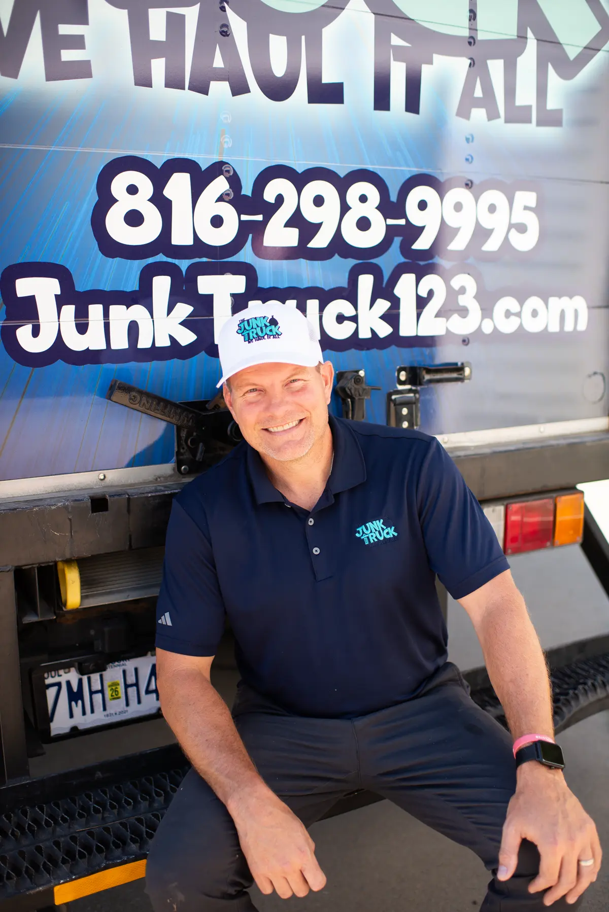

Started from scratch.
Still hauling.
The Junk Truck is a Honest take of what a local service company should be: on time, in uniform, and proud of the work.
Locally owned.
Self-funded.
Not a franchise.
The Junk Truck was built from the ground up by Collin Grote, a Kansas City resident who was tired of seeing the local service industry get swallowed up by out-of-state franchise call centers.
No franchise fee. No corporate playbook written in another city. Just a local owner, a hardworking crew, and a simple promise: show up, show up on time, show up looking professional — and treat every customer like a neighbor.
That commitment to the community is why we lean into "Shop Local" on every truck we send out. When you hire The Junk Truck, every dollar stays right here in the KC metro.

Four promises.
Every single job.
Show Up
When we say we'll be there, we're there. Dispatch sends updates so you're never guessing.
Show Up On Time
Your time matters. We give tight windows and hit them — no 4-hour "somewhere between" nonsense.
Show Up Professional
Clean trucks. Uniformed crew. Respectful of your home, your yard, and your neighbors.
100% Satisfaction
If you're not happy, we make it right. Our name's on the truck — our word's behind it.
Kansas City is our neighborhood.
Every cleanout we haul stays local. Usable items go to KC-area donation centers. Metals and electronics go to local recyclers. The rest gets disposed of responsibly — no out-of-state shortcuts.
When you hire us, you're not just clearing out your garage. You're keeping a local crew employed, supporting KC-area donation partners, and making sure your dollar works for your community.
See what we haul